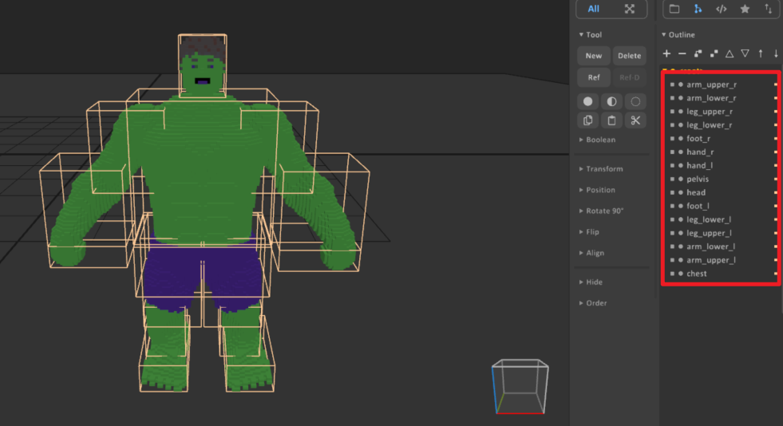
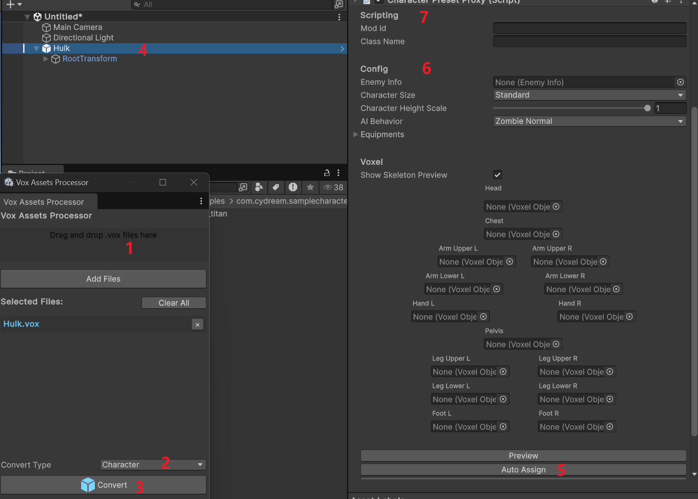
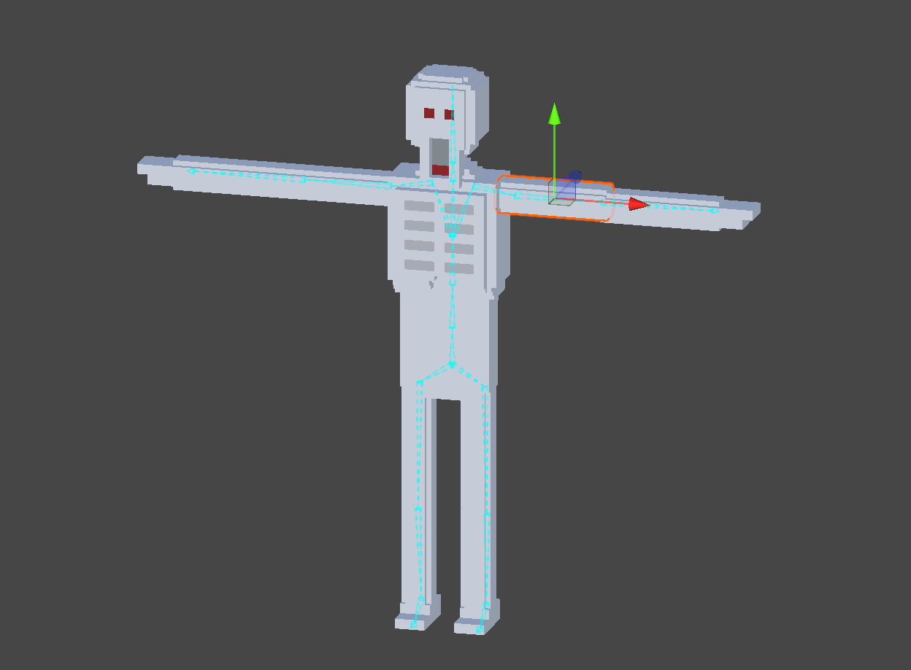
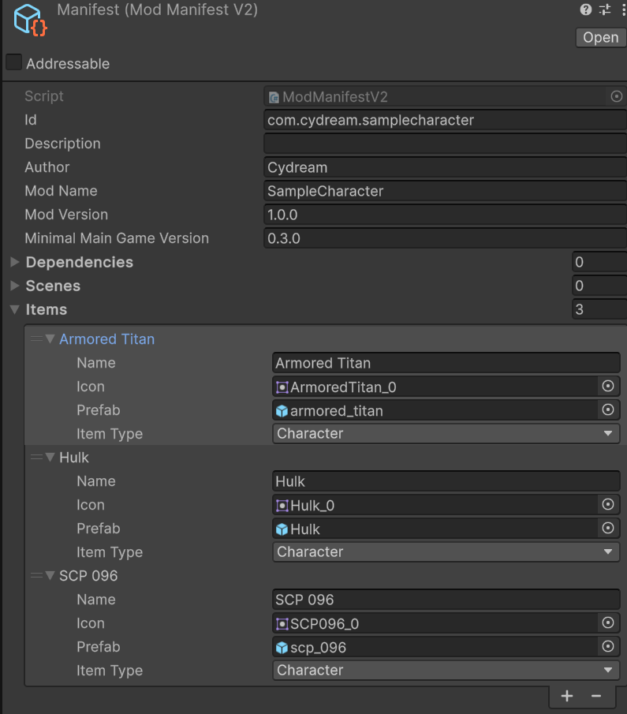

This tutorial explains how to prepare a voxel character, import it into the toolkit, and align it to the in-game skeleton.
For the gameplay-side meaning of the main inspector fields, see Character Proxy. That page explains what CharacterPresetProxy, CharacterSize, EnemyInfo, CharacterAIBehavior, and the body-part slots are used for at runtime.
Before import, split the character into separate voxel objects for each body part. Each limb should be its own voxel object so the importer can assign it to the correct skeleton slot later.
Recommended naming:
headchestpelvisarm_upper_larm_lower_lhand_larm_upper_rarm_lower_rhand_rleg_upper_lleg_lower_lfoot_lleg_upper_rleg_lower_rfoot_rThe exact pose in MagicaVoxel does not matter. A T-pose, A-pose, or any other neutral pose is acceptable, and the initial character size also does not need to be exact. After import, you will align the voxel parts to the game skeleton inside the editor.
For performance, the final voxel scale should generally stay above 0.03m. If the model is much denser than that, the voxel count can become unnecessarily high and hurt runtime performance.

.vox file into the toolkitUse Vox Assets Processor to create the character prefab:
.vox file into Vox Assets Processor.After auto assign, verify that each slot points to the correct voxel object. If any names do not match the expected body part, fix them manually.
The generated prefab is mainly configured through CharacterPresetProxy. If you want a field-by-field explanation of those slots and gameplay options, refer to Character Proxy.

Once the character prefab has been generated, you can configure the gameplay-facing settings in the inspector:
These settings are independent from the original authoring pose in MagicaVoxel, so it is normal to refine them after import.
The detailed meaning of these settings is documented in Character Proxy.
If you want to configure detailed AI actions beyond selecting the basic behavior type, see AI Actions.
After the character has been assigned and configured, align the voxel body parts to the skeleton in the scene view.
This alignment step is what makes the imported voxel character work correctly with the in-game skeleton and animation system.
If a body slot, size preset, or gameplay setting is unclear during this step, use Character Proxy as the reference page for the runtime character setup.

After the prefab is configured, add it to the mod manifest and export the mod package.
manifest.asset.
After the manifest is ready, export the mod with the standard mod export flow.
This final step makes the configured character available in the built mod package.